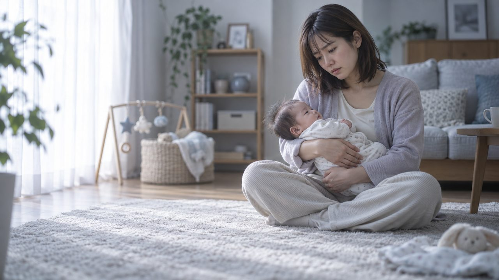
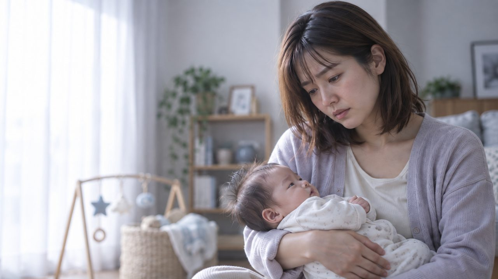
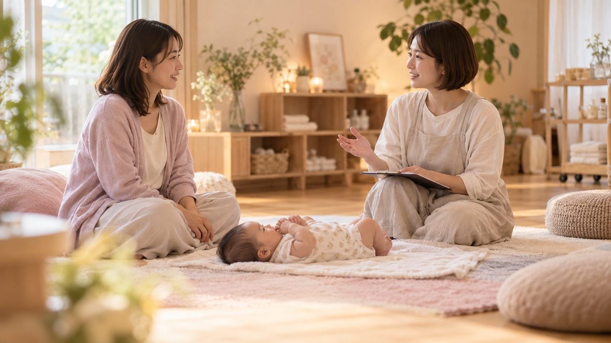
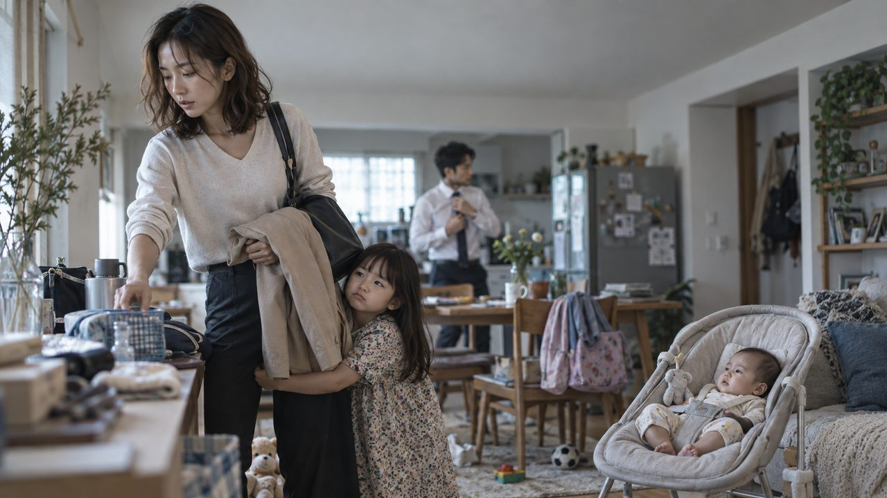
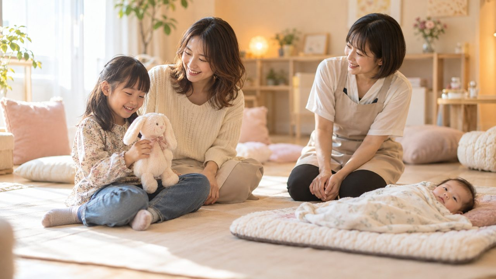
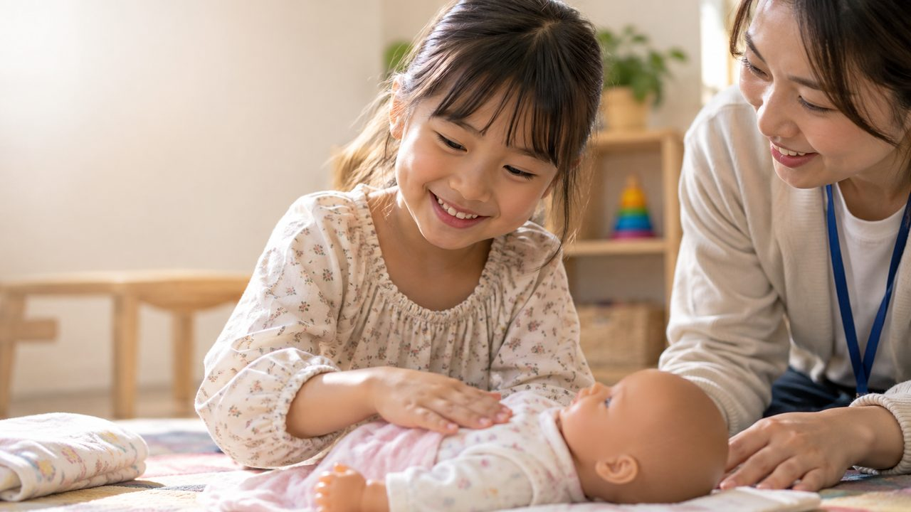
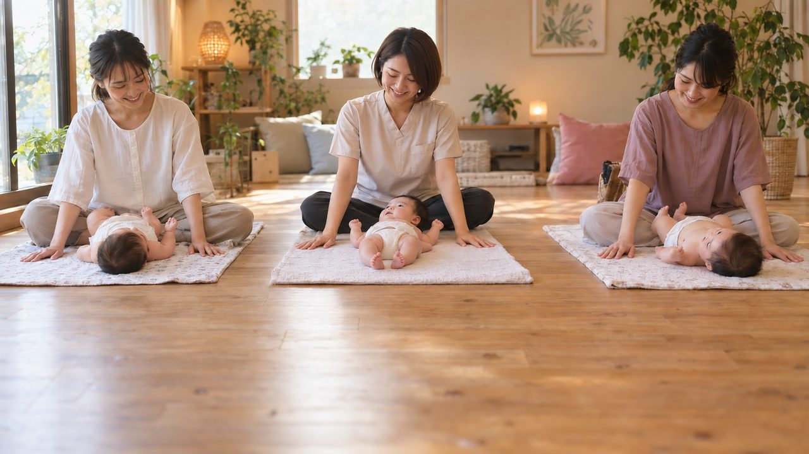
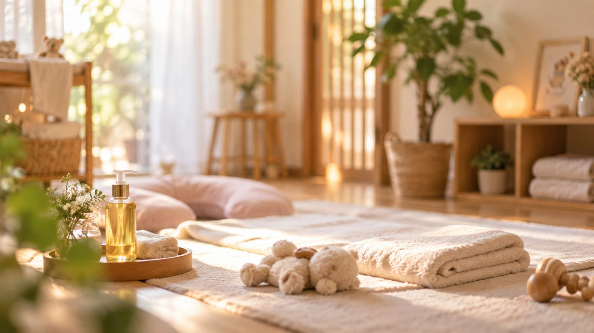

S010:00–0:04不安げな表情で赤ちゃんを抱くママ
ベビーマッサージサロン／新潟県長岡市稲保南1丁目244-9
50秒・11カット・静止画をゆっくり動かしたバージョンです（ナレーション・BGMは未収録）。
再生できない場合は こちらから直接ダウンロード してください。
「初めての子育てで不安なママ」と「きょうだいのいる4人家族」の2つの物語を前後半で描き、最後にサロンへご案内する流れです。
画像はGPT Imageで生成した仮の画です。表示されているテロップが、現時点での本番文言案です。

S010:00–0:04不安げな表情で赤ちゃんを抱くママ

S020:04–0:10不安の深掘り
夜泣き／発達／不安…ひとりで抱えていませんか？

S030:10–0:15来店・カウンセリング
ベビーマッサージサロン Lien
施術シーン
雨や雪の日も安心。カーポート駐車場
安堤の表情

S060:23–0:274人家族の朝・きょうだいの嫂妒

S070:27–0:32家族でLienへ・きょうだい参加
兄弟・姉妹も一緒に体験できます

S080:32–0:37お姉ちゃんの笑顔・人形で練習
オイル不使用の人形で体験OK

S090:37–0:43講師育成講座・教室シーン
ベビーマッサージ講師育成講座も開講中
おくるみタッチケア
おくるみタッチケア教室

S110:47–0:50エンドカード
Lien／住所・営業時間・電話番号／QR（暫定）
店舗の外観・内観・代表者様のお写真・講師風景写真・ロゴを、まだいただけていません。 そのため今回は参考動画とヒアリング内容だけをもとに、全カットAI生成で構成しました。
お写真をいただけましたら、該当するカットだけ実物に近づけて差し替えます （新しく撮影いただく必要はなく、お手元の既存のお写真で大丈夫です）。
登場人物（ママ・4人家族・カウンセラー役）は、実在の人物やタレントを模したものではなく、 AIが独自に生成した架空の人物です。
業態が近い実在の広告動画を参考に、トーン・構成を組んでいます（生存確認済み）。
ユニ・チャーム
初めての育児の不安を静かなトーンで描き、後半で安心に転換する構成の参考にしました。
youtu.be/JnQhiHXGa68
AC JAPAN
きょうだいが増えることで家族の形が変わっていく様子の描写を参考にしました。
youtu.be/RqovF50ZyCU
Johnson's Baby
母親を否定せず寄り添うメッセージの伝え方を、ナレーション方針の参考にしています。
youtube.com/watch?v=nD42PJnPzH4